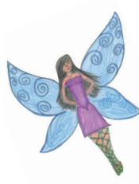
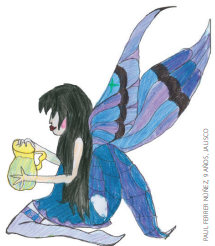

LAS HADAS

Cierta viuda tenía dos hijas; la mayor tanto se le parecía en el carácter y el rostro, que quien la veía, a su madre miraba; y una y otra
eran tan poco amables y tan orgullosas, que no había manera de
vivir con ellas. La menor era el exacto retrato de su padre por su
dulzura y honestidad, y cuantos la conocían afirmaban que era una
joven hermosísima de alma y de cuerpo. Como cada cual ama a su
semejante, con delirio quería la madre a la mayor y era grande su
aversión por la otra hija, a quien obligaba a comer en la cocina,
condenándola a un trabajo incesante… La pobre criatura tenía que
ir dos veces al día en busca de agua a un lugar muy retirado de la
casa, regresando con una enorme jarra llena.
Pero un día que la joven estaba en la fuente, se le acercó una pobre mujer rogándole que le diera de beber.
—Con mucho gusto, mi buena madre
—le contestó la
hermosa joven; levantando la jarra la llenó de agua en el sitio
de la fuente donde más cristalina era, y luego la sostuvo para
que la vieja bebiera con toda comodidad.
Una vez que la anciana apagó su sed, le dijo:
—Eres tan bella, tan hermosa y tan honesta que
quiero hacerte un don: a cada palabra que digas saldrá de tu boca una flor o una piedra preciosa.

La vieja era una hada que había tomado la apariencia de una
pobre mujer de aldea por ver hasta dónde llegaba la bondad de la
joven.
Cuando la hija llegó a su casa, su madre la regañó porque volvía
muy tarde de la fuente.
—Te pido perdón, madre mía
—contestó la pobre joven—, por
haber tardado tanto tiempo.
Al decir estas palabras, le salieron de la boca dos rosas, dos perlas
y dos gruesos diamantes.
—¡Qué veo! —exclamó la madre llena de admiración—. ¡Me
parece que te saltan de la boca perlas y diamantes! ¿A qué se debe
eso, hija mía?
Fue la primera vez que la llamó hija. La pobre joven le contó
candorosamente lo que le había pasado, y mientras hablaba
saltaron diamantes en número infinito de sus labios.
—Enviaré a mi otra hija a la fuente —dijo la madre—. Mira
lo que sale de la boca de tu hermana cuando habla.
¿No te gustaría poseer el mismo don? Para alcanzarlo no tienes más que ir por
agua a la fuente, y cuando una pobre mujer te pida de beber, complácela con mucha amabilidad.
—¡No faltaba más! —exclamó la hija mayor— ¡ir yo a la fuente!
—Quiero que vayas en seguida— ordenó la madre.
A la fuente fue, pero refunfuñando durante todo el camino. Se
llevó la más hermosa jarra de plata que había en la casa, y en cuanto llegó a la fuente vio salir del bosque a una dama magníficamente
vestida que le pidió de beber. Era la misma hada que se había aparecido a su hermana, pero esta vez se presentaba con las maneras y
vestidos de una princesa, por ver hasta dónde llegaba la maldad de
la joven.
—¿Acaso he venido aquí —le contestó con rudeza la orgullosa—, para darte de beber? ¿Creerás que para eso he traído una jarra
de plata? Aquí está la fuente, si tienes sed, bebe.
La hada le contestó, sin que sus palabras revelaran irritación:
—No eres buena, y puesto que tan poca es tu amabilidad, te
concedo un don: a cada palabra que pronuncies saldrá de tu boca
una culebra o un galápago.
Al regresar a la casa gritó emocionada su madre en
cuanto la vio.
—¿Y bien, hija mía?
—¿Y bien, madre mía? —contestó secamente, mientras saltaban de su boca dos víboras y dos galápagos.
—¡Cielo santo! —exclamó la madre—, tu hermana
tiene de ello la culpa y me la pagará.
Dicho esto corrió detrás de la menor para golpearla

Y la pobre joven escapó y se fue al bosque próximo donde se refugió. La halló el hijo del rey que volvía de caza, y al verla tan hermosa le preguntó qué hacía sola en tal sitio y por qué lloraba.
—¡Ah, señor —sollozó—
Mi madre me ha echado de casa!
El hijo del rey, que vio salir de su boca cinco o seis perlas y otros
tantos diamantes, le rogó que le dijera a qué se debía tal maravilla.
Le contó la joven su aventura de la fuente. El príncipe se enamoró
de ella, y considerando que el don que poseía valía más que la dote
que pudiese tener otra mujer, la llevó al palacio de su padre y se
casó con ella.
En cuanto a la hermana mayor, tanto se hizo aborrecer que su
madre la echó fuera; y después de haber andado mucho la desgraciada sin encontrar quién quisiera recibirla, murió en un rincón del
bosque.
MORALEJAS
Con diamantes y dinero mucho se obtiene en verdad, pero con dulces palabras aún se obtiene mucho más.
Otra moraleja La honradez, tarde o temprano alcanza su recompensa, y con frecuencia se logra cuando en ella no se piensa.
